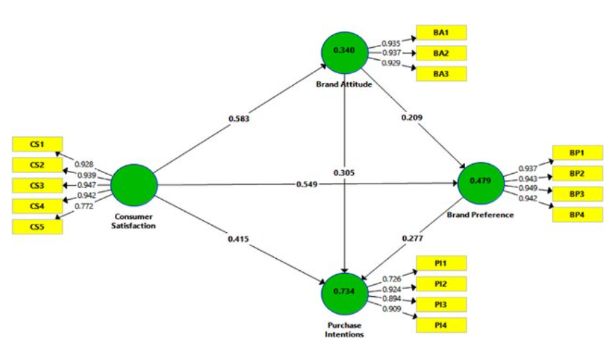

Introduction
Partial Least Squares Structural Equation Modeling (PLS-SEM) is a statistical approach used to estimate complex cause-effect relationship models involving latent constructs and their indicators. It’s widely used in fields like marketing, management, psychology, and social sciences, particularly when traditional covariance-based SEM (CB-SEM) assumptions are too restrictive or the data do not meet normality or sample size requirements.

Key Concepts in PLS-SEM
Latent Variables (LVs): Latent variables are unobserved variables that are inferred from multiple observed indicators. In PLS-SEM, these are often theoretical constructs like “Customer Satisfaction” or “Brand Loyalty.” LVs are measured indirectly via observed variables, called indicators.
Indicators: These are the observed variables or items (such as survey questions or measurable attributes) used to measure the latent variables. For instance, “Customer Satisfaction” could be measured using a set of questions where each question represents an indicator.
Measurement Model (Outer Model): This part of the model defines the relationship between the latent variables and their respective indicators. There are two types of measurement models:
- Reflective Measurement Model: Indicators are caused by the latent variable (e.g., “Customer Satisfaction” causes the survey responses).
- Formative Measurement Model: Indicators form or define the latent variable (e.g., “Income” and “Education” collectively form “Socioeconomic Status”).
Structural Model (Inner Model): This represents the relationships between latent variables, defining the hypothesized paths and cause-effect relationships in the model. For example, “Customer Satisfaction” might influence “Customer Loyalty.”
Path Coefficients: These are the estimates of the relationships between latent variables in the structural model. They indicate the strength and direction of the relationships (similar to regression coefficients).
Weights and Loadings:
- Weights are used to calculate latent variable scores from their indicators (especially in formative models).
- Loadings represent the strength of the relationship between indicators and latent variables in reflective models.
R-squared: This is the measure of explained variance for the endogenous latent variables (dependent variables) in the model. It indicates how much variance in the latent variable is explained by the independent variables.
When to Use PLS-SEM
PLS-SEM is used when:
The model is complex with many latent variables and indicators.
The data do not meet the assumptions of normality or large sample size.
The goal is prediction or theory development (as opposed to theory confirmation).
Formative constructs (where indicators form a latent variable) are present.
The model includes relationships that might not converge in CB-SEM.
PLS-SEM is particularly useful when dealing with smaller samples, non-normal data, and exploratory research scenarios.
Advantages of PLS-SEM
Flexibility: PLS-SEM can handle both reflective and formative constructs, and it doesn’t require strict distributional assumptions (i.e., no normality assumption).
Small Sample Size: PLS-SEM performs well with small to medium sample sizes, unlike CB-SEM, which requires larger samples.
Complex Models: It is suited for models with a large number of constructs and relationships (even when these models may not converge using CB-SEM).
Focus on Prediction: PLS-SEM is more concerned with maximizing the explained variance (prediction) of dependent variables rather than testing the fit of the entire model.
Bootstrapping for Significance: PLS-SEM uses bootstrapping techniques to generate standard errors and confidence intervals, allowing for hypothesis testing without relying on traditional parametric assumptions.
Steps in PLS-SEM
Model Specification: Specify the measurement model (linking latent variables and indicators) and the structural model (linking latent variables to each other).
Model Estimation: PLS-SEM iteratively estimates relationships by maximizing the variance explained in the dependent latent variables. It first estimates the latent variable scores, then calculates the path coefficients.
Model Evaluation: Evaluate the measurement model (using indicator reliability, internal consistency, and convergent validity) and the structural model (using path coefficients, R-squared, and predictive relevance).
Bootstrapping: This is used to estimate the precision of the PLS estimates and to assess the significance of the path coefficients (p-values) in the structural model.
Model Evaluation Criteria
Measurement Model:
Reliability: Evaluated using indicator loadings and composite reliability.
Validity: Checked with average variance extracted (AVE), discriminant validity (HTMT or Fornell-Larcker criterion).
Collinearity: VIF (Variance Inflation Factor) to ensure no multicollinearity in formative constructs.
Structural Model:
- Path Coefficients: The strength and significance of relationships between latent variables.
- R-squared (R²): Indicates the variance explained by independent latent variables for each endogenous latent variable.
- Predictive Relevance (Q²): Assessed using blindfolding procedures to determine how well the model can predict.
Goodness of Fit: Although traditional SEM focuses on model fit indices (like chi-square, RMSEA, etc.), PLS-SEM focuses more on the variance explained (R²) and predictive power rather than overall model fit.
Common Software for PLS-SEM
- SmartPLS: A popular commercial software with a graphical user interface.
- ADANCO: Another commercial software specifically designed for PLS-SEM.
- R: Free and flexible tools like
plspm,semPLS, andseminr. - WarpPLS: A commercial tool that offers unique algorithms for PLS-SEM.
PLS-SEM vs. Covariance-Based SEM (CB-SEM)
| Feature | PLS-SEM | CB-SEM (e.g., LISREL, AMOS) |
|---|---|---|
| Goal | Prediction, theory development | Theory confirmation |
| Sample Size | Small to medium | Large |
| Assumptions | Non-parametric, no normality required | Parametric, requires normality |
| Model Fit | Focuses on R² and predictive power | Fit indices (e.g., RMSEA, CFI, etc.) |
| Handling Complexity | Handles complex models easily | May struggle with large, complex models |
Applications of PLS-SEM
- Marketing: Used for customer satisfaction and loyalty models.
- Social Sciences: To explore relationships between behavioral constructs.
- Business: For evaluating business performance and strategy.
- Information Systems: For studying technology acceptance models (e.g., TAM).
Conclusion
PLS-SEM is a powerful and flexible method used to estimate complex models with latent variables and their indicators. It is especially suited for exploratory research and predictive modeling, offering an alternative to traditional covariance-based SEM when data and model conditions are not ideal.
If you found this article interesting and informative. The GitHub repository is here. You can follow me on Twitter and Linkedin for more updates on R, Python, STATA and Excel for data science.